Plateforme de Gestion des Ressources Humaines (GRH)
Application web de Gestion Ressource humaines .
 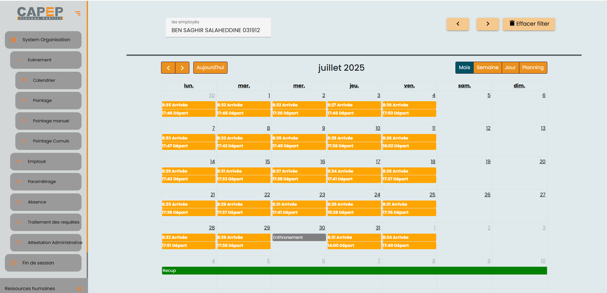
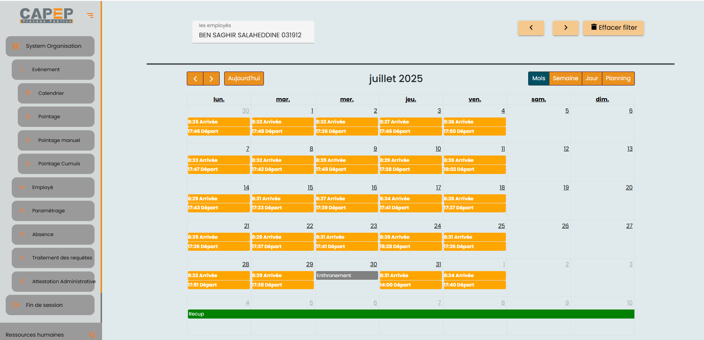
 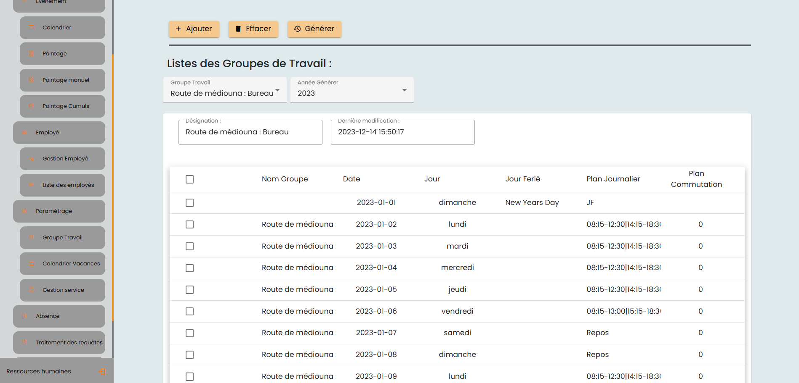
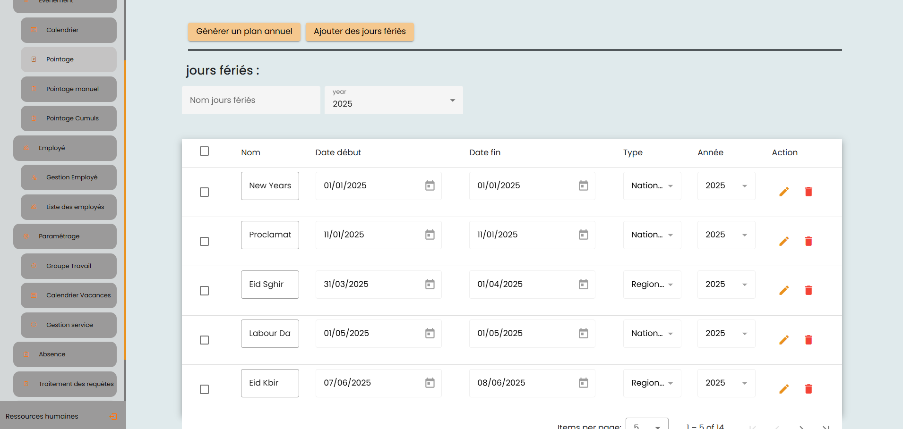
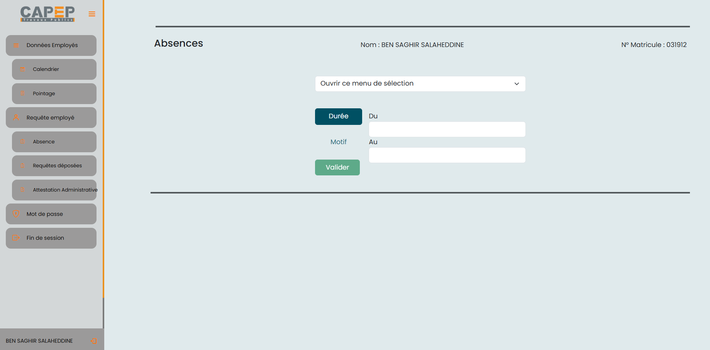
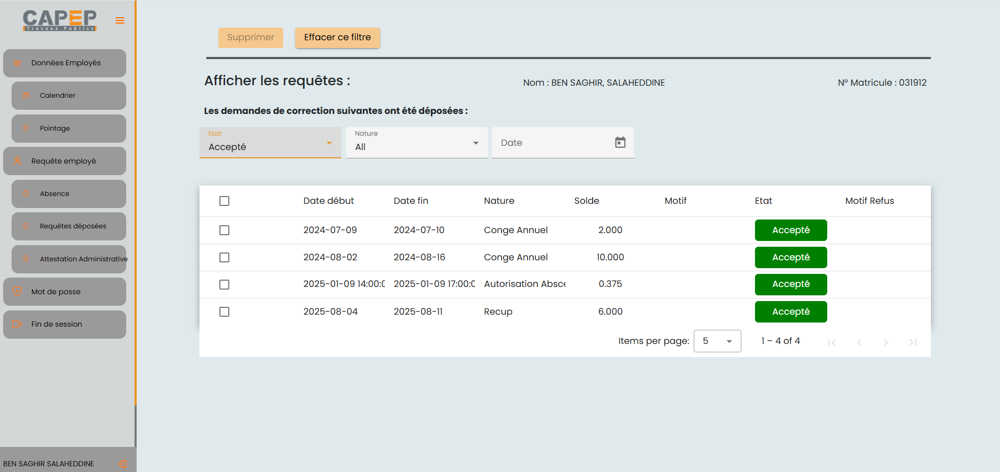
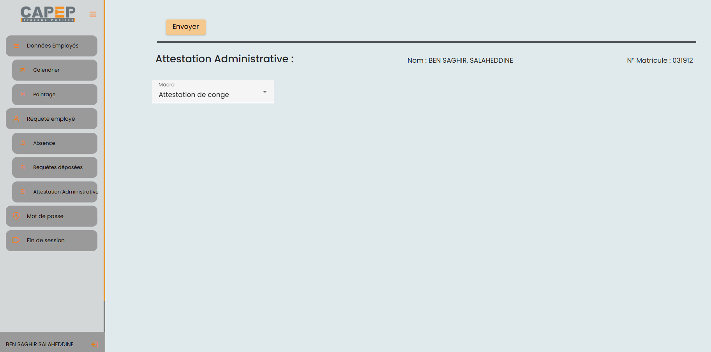
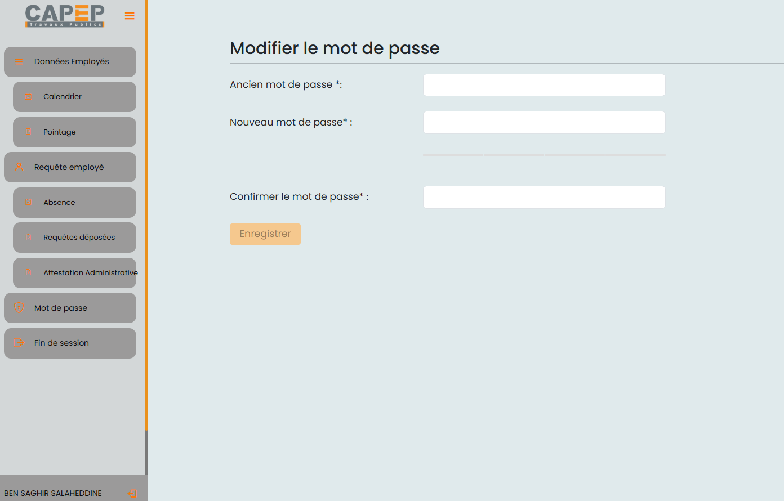
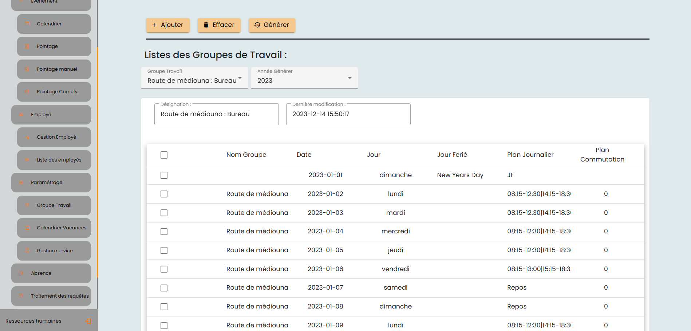
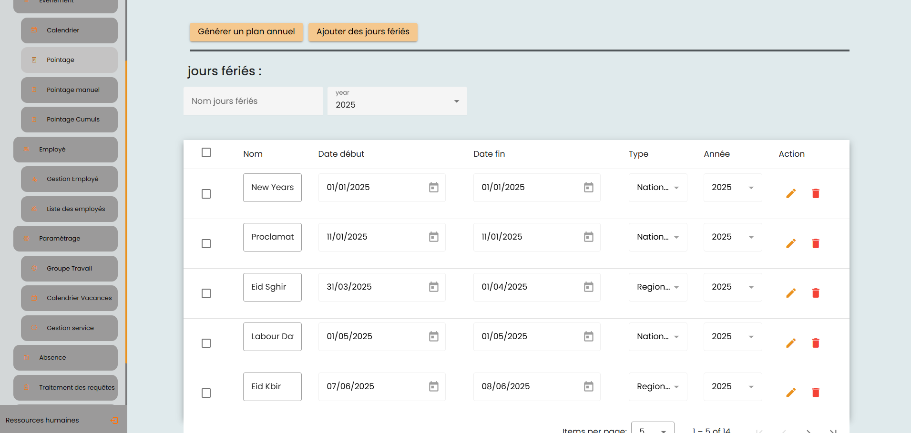
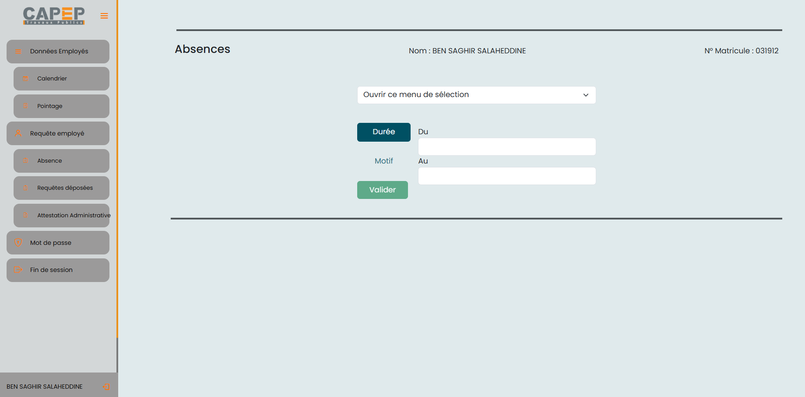
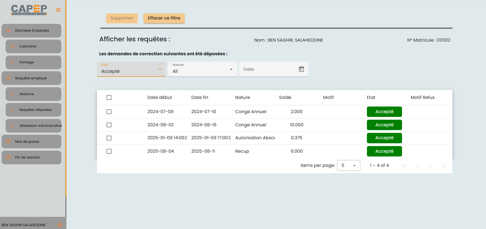
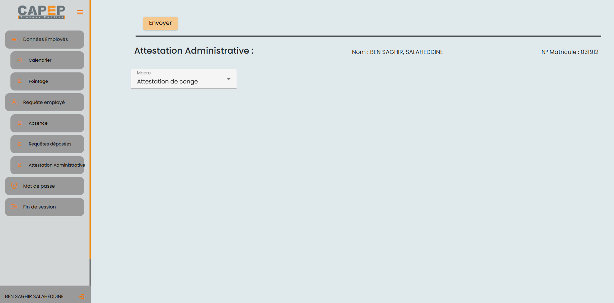
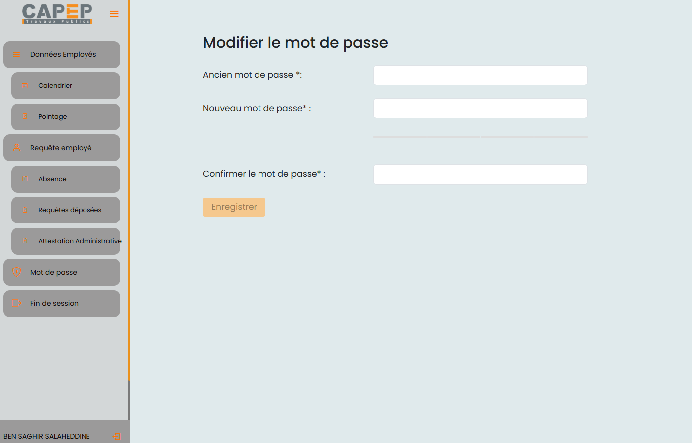
Objectif du projet
La gestion du temps de travail et des congés constitue un enjeu majeur pour les entreprises, tant sur le plan légal qu’opérationnel. Le suivi précis des heures de présence des salariés, via des systèmes de pointage automatisés, permet de garantir la conformité aux obligations légales tout en optimisant l’organisation interne. Parallèlement, la gestion des congés et des absences assure le respect des droits des employés et une planification efficace des ressources. Ce projet vise à développer une plateforme intégrée de gestion des ressources humaines, centralisant le pointage, le suivi des congés et la génération de rapports, afin de simplifier les processus RH, sécuriser la conformité légale et améliorer l’efficacité globale de l’entreprise.
Fonctionnalités principales
- Permettre aux salariés de soumettre en ligne leurs demandes de congés, d’absences ou de missions à leur hiérarchie.
- Offrir aux responsables la possibilité de valider ou refuser les demandes des collaborateurs directement via la plateforme.
- Fournir une vision claire des indicateurs relatifs au temps de travail et aux données sociales associées.
- Optimiser la gestion des congés, en facilitant le suivi et la planification des absences.
- Mettre à disposition des responsables, en temps réel, des informations sur les absences non justifiées, retards répétés et autres anomalies..